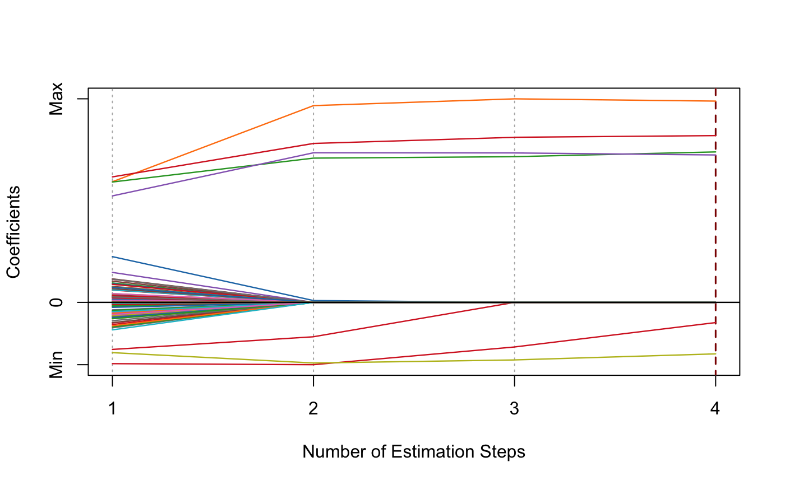

Multi-Step Adaptive SCAD-Net
msasnet(x, y, family = c("gaussian", "binomial", "poisson", "cox"), init = c("snet", "ridge"), gammas = 3.7, alphas = seq(0.05, 0.95, 0.05), tune = c("cv", "ebic", "bic", "aic"), nfolds = 5L, ebic.gamma = 1, nsteps = 2L, tune.nsteps = c("max", "ebic", "bic", "aic"), ebic.gamma.nsteps = 1, scale = 1, eps = 1e-04, max.iter = 10000L, seed = 1001, parallel = FALSE, verbose = FALSE)
| x | Data matrix. |
|---|---|
| y | Response vector if |
| family | Model family, can be |
| init | Type of the penalty used in the initial
estimation step. Can be |
| gammas | Vector of candidate |
| alphas | Vector of candidate |
| tune | Parameter tuning method for each estimation step.
Possible options are |
| nfolds | Fold numbers of cross-validation when |
| ebic.gamma | Parameter for Extended BIC penalizing
size of the model space when |
| nsteps | Maximum number of adaptive estimation steps.
At least |
| tune.nsteps | Optimal step number selection method
(aggregate the optimal model from the each step and compare).
Options include |
| ebic.gamma.nsteps | Parameter for Extended BIC penalizing
size of the model space when |
| scale | Scaling factor for adaptive weights:
|
| eps | Convergence threshhold to use in SCAD-net. |
| max.iter | Maximum number of iterations to use in SCAD-net. |
| seed | Random seed for cross-validation fold division. |
| parallel | Logical. Enable parallel parameter tuning or not,
default is FALSE. To enable parallel tuning, load the
|
| verbose | Should we print out the estimation progress? |
List of model coefficients, ncvreg model object,
and the optimal parameter set.
dat = msaenet.sim.gaussian( n = 150, p = 500, rho = 0.6, coef = rep(1, 5), snr = 2, p.train = 0.7, seed = 1001) msasnet.fit = msasnet( dat$x.tr, dat$y.tr, alphas = seq(0.3, 0.9, 0.3), nsteps = 3L, seed = 1003) print(msasnet.fit)#> Call: msasnet(x = dat$x.tr, y = dat$y.tr, alphas = seq(0.3, 0.9, 0.3), #> nsteps = 3L, seed = 1003) #> Df Lambda Gamma Alpha #> 1 6 0.2931289 3.7 0.6msaenet.nzv(msasnet.fit)#> [1] 2 3 4 5 114 379#> [1] 2#> [1] 4#> [1] 2.258146plot(msasnet.fit)